Chapter 4 데이터 시각화
4.1 들어가며
그래프는 강력하다. 여러 개의 표보다 잘 그린 그래프 하나가 더 선명한 메시지를 전달하기도 한다. 그래프는 연구 결과를 제시할 때뿐 아니라 데이터 분석을 시작하는 단계에서도 필요하다. 관심 변수의 분포와 이상치(outlier)를 살펴보고, 집단 간 차이나 변수 간 관계를 탐색하면 표만으로는 발견하기 어려운 패턴을 확인할 수 있다. 4장에서는 R의 대표적인 장점 중 하나인 데이터 시각화를 살펴본다.
R의 기본 그래픽 함수로도 간단한 그래프를 그릴 수 있다. 그러나 여러 정보를 체계적으로 조합하고 일관된 형태의 그래프를 만들려면 별도의 패키지가 유용하다. 3장에서 다룬 tidyverse의 핵심 패키지인 ggplot2가 대표적이다. 이 장에서는 변수의 개수와 유형에 맞는 그래프를 선택하고, ggplot2로 분포와 관계를 표현하는 방법을 익힌다.
4.2 ggplot2의 설치 및 소개
4.2.1 ggplot2 설치
ggplot2는 단독으로 설치할 수도 있고 tidyverse와 함께 설치할 수도 있다. 패키지 설치는 컴퓨터마다 한 번만 수행하며, 다음 코드는 R 콘솔에서 실행한다.
설치한 패키지는 R을 새로 시작할 때마다 library()로 불러온다. 이 책에서는 데이터 전처리 예제와 연결하기 위해 tidyverse 전체를 불러온다. ragg는 그래프 파일을 선명하게 만들고 한글 글꼴을 안정적으로 표시하는 데 사용한다. 설치되어 있지 않은 환경에서는 R의 기본 그래픽 장치를 사용한다.
4.2.2 ggplot2의 작동 원리
ggplot2는 그래프를 구성하는 요소를 문법처럼 조합한다. 데이터와 변수를 지정한 뒤 점, 선, 막대와 같은 기하 객체를 층(layer)으로 쌓는 방식이다. 층을 투명한 도화지라고 생각하면 이해하기 쉽다. 첫 번째 층에 점을 그리고, 그 위에 추세선과 주석을 차례로 더할 수 있다.
ggplot2 그래프의 기본 구성 요소는 다음과 같다.
- 사용할 데이터(
data) - 축이나 색, 모양 등에 연결할 변수(
aes()) - 점, 선, 막대처럼 관측값을 표현할 기하 객체(
geom_*())
여기에 다음 요소를 선택적으로 추가할 수 있다.
- 통계적 변환(
stat_*()) - 축과 범례의 척도(
scale_*()) - 좌표계(
coord_*()) - 그래프의 배경과 글꼴(
theme_*()) - 집단별 패널 분리(
facet_*()) - 제목과 축 이름(
labs())
4.2.3 변수의 개수, 유형과 그래프 종류
데이터 시각화는 탐색적인 작업이다. 어떤 변수를 선택하고 그 변수의 어떤 특성을 보여줄지에 따라 적합한 그래프가 달라진다. 그래프를 선택하기 전에 다음 두 가지를 확인한다.
첫째,
변수의 개수: 한 변수의 빈도나 분포를 볼 것인가, 두 개 이상 변수의 관계를 볼 것인가?둘째,
변수의 유형: 선택한 변수가 범주형(categorical), 순서형(ordinal), 연속형(continuous) 가운데 어디에 해당하는가?
이 두 가지가 결정되면 선택할 수 있는 그래프의 범위가 좁아진다. 예를 들어 산점도(scatter plot)는 두 연속형 변수의 관계를 표현하므로 변수가 하나뿐이거나 두 변수가 모두 범주형인 경우에는 적합하지 않다. 그래프를 그리기 전에 변수의 개수와 유형을 확인하는 습관이 필요하다.
4.3 변인이 1개인 graph
4.3.1 변인이 연속형(continuous)인 경우
앞서 dplyr에서 작업했던 worker_3 데이터를 활용하여 그래프를 그려보자. woker_3 데이터의 w336_01과 w336_02는 각각 주당 정규 근로시간과 초과 근로시간을 의미한다. 근로시간은 0부터 시작되는 연속형 변수이기 때문에 이 변수를 x축으로 두고, y축은 빈도나 비율로 표현하는 히스토그램histogram과 밀도그래프density를 그릴 수 있다.
4.3.1.1 histogram
w336_02는 주당 초과근로시간을 나타낸다. 이 변수의 분포는 geom_histogram()으로 확인할 수 있다. 앞서 살펴본 ggplot2의 구조를 떠올리며 다음 코드를 해석해보자.
ggplot()에 사용할 데이터프레임worker_3_se를 지정한다.aes()에서 초과근로시간 변수w336_02를 x축에 연결한다.aes는 aesthetic mapping을 뜻한다.geom_histogram()으로 그래프의 형태를 지정한다.- 층은
+로 연결한다. 완성된 그래프를 객체에 저장하면 같은 그래프를 다시 출력하거나 수정하기 쉽다.
ggplot(worker_3_se) +
geom_histogram(aes(x = w336_02))
## `stat_bin()` using `bins = 30`. Pick better value `binwidth`.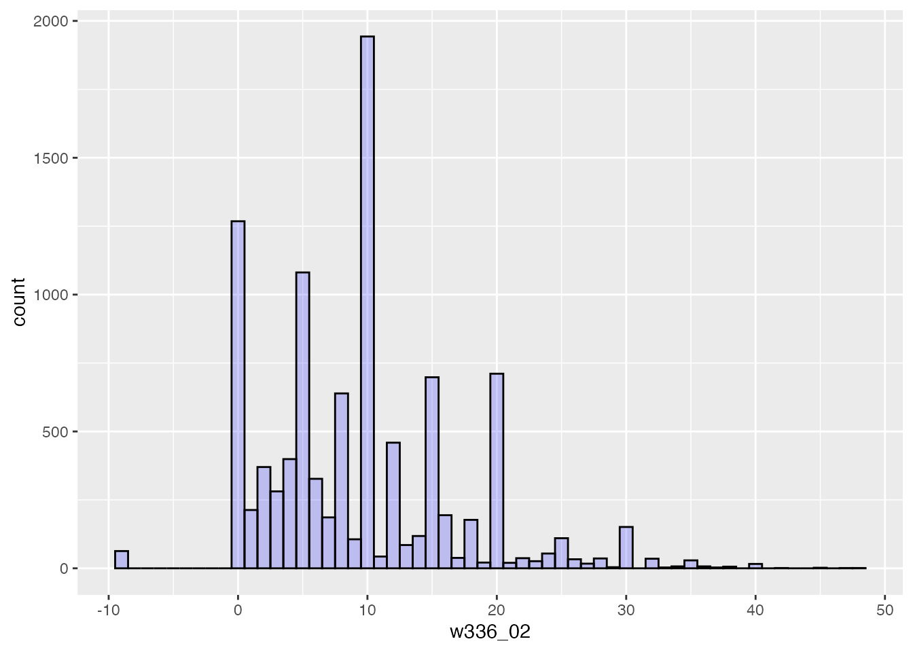
이 코드를 실행하면 stat_bin() using bins = 30이라는 안내 메시지가 나타난다. 오류가 아니라, ggplot2가 전체 범위를 30개 구간(bin)으로 나누었다는 뜻이다. 구간의 개수는 bins, 구간의 너비는 binwidth로 지정한다. 분석 목적에 따라 여러 값을 비교해 보고 분포가 과도하게 뭉개지거나 불필요하게 들쭉날쭉하지 않은 값을 선택해야 한다. 여기서는 한 시간 단위로 살펴보기 위해 binwidth = 1을 사용한다.
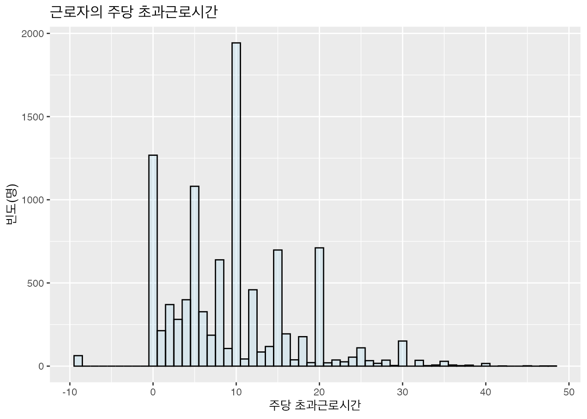
몇 가지 시각적 속성을 더 지정해보자.ggplot2에서는 면 색(fill), 투명도(alpha), 선 색(color), 선 종류(linetype) 등을 조정할 수 있다.
- 색 이름이나 16진수 색상 코드(예:
"#56B4E9")를 따옴표 안에 입력할 수 있다. alpha에는 0과 1 사이의 값을 지정한다. 0에 가까울수록 투명해진다.
ggplot(worker_3_se) +
geom_histogram(
aes(x = w336_02),
binwidth = 1, color = "black", fill = "blue", alpha = 0.2
)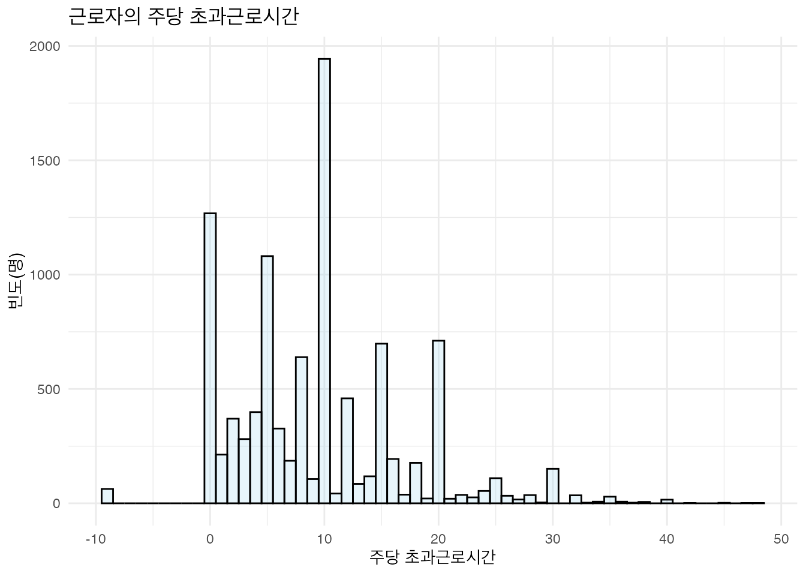
만일 x축과 y축의 명칭을 수정하거나, 그래프의 제목을 달고 싶다면 어떻게 해야 할까? 마찬가지로 layer를 추가해주면 된다. 이때 쓰이는 명령어는 labs(title="", x="", y="")이다.
ggplot(worker_3_se) +
geom_histogram(
aes(x = w336_02),
binwidth = 1, color = "black", fill = "skyblue", alpha = 0.2
) +
labs(
title = "근로자의 주당 초과근로시간",
x = "주당 초과근로시간", y = "빈도(명)"
)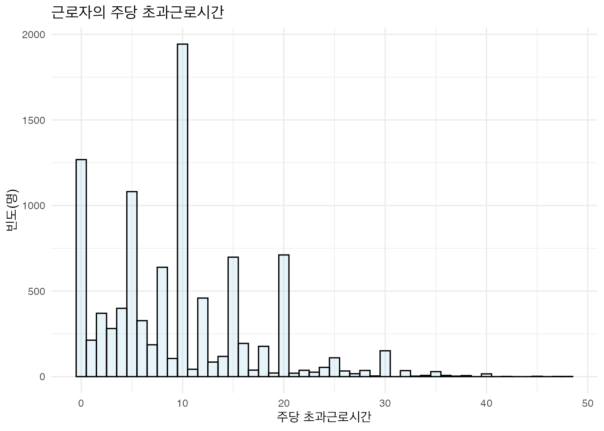
그래프의 배경은 theme_*() 함수로 변경할 수 있다. 다음은 자주 사용하는 테마이다.
theme_grey(): 회색 배경의 기본 테마theme_bw(): 흰 배경과 격자를 사용하는 테마theme_classic(): 흰 배경에 격자가 없는 테마theme_minimal(): 배경 요소를 최소화한 테마
ggplot(worker_3_se) +
geom_histogram(
aes(x = w336_02),
binwidth = 1, color = "black", fill = "skyblue", alpha = 0.2
) +
labs(
title = "근로자의 주당 초과근로시간",
x = "주당 초과근로시간", y = "빈도(명)"
) +
theme_minimal()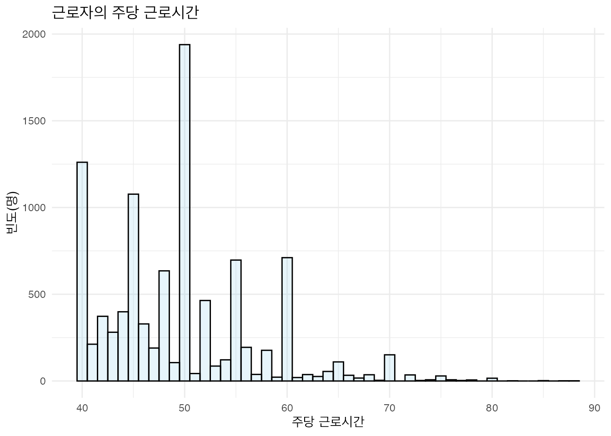
이제ggplot2의 기본 구조를 확인했다. 다른 그래프도 같은 구조를 사용하므로 데이터, aesthetic mapping, geom을 차례로 확인하면 코드를 쉽게 해석할 수 있다. 다음으로 ggplot2와 dplyr을 연결해보자.
히스토그램에는 음수로 코딩된 값이 포함되어 있다. 이 자료에서 음수는 무응답처럼 유효한 근로시간이 아닌 값을 나타낸다. 정확한 의미는 반드시 원자료의 코드북에서 확인해야 한다. 여기서는 filter()로 0 이상인 관측치만 선택한 뒤 그래프를 그린다.
worker_3_se %>%
filter(w336_02 >= 0) %>%
ggplot() +
geom_histogram(
aes(x = w336_02),
binwidth = 1, color = "black", fill = "skyblue", alpha = 0.2
) +
labs(
title = "근로자의 주당 초과근로시간",
x = "주당 초과근로시간", y = "빈도(명)"
) +
theme_minimal()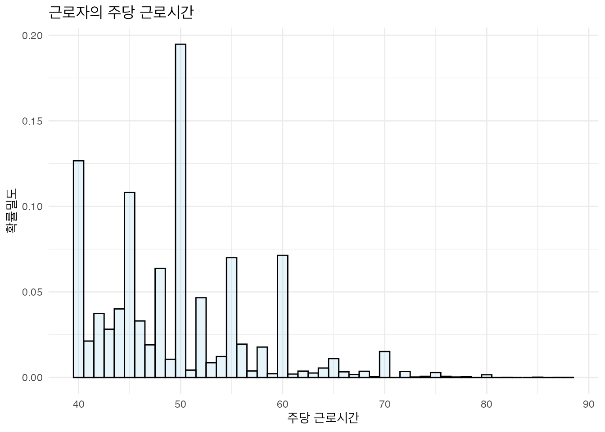
파이프 연산자%>%는 앞 단계의 결과를 다음 함수로 전달한다. 따라서 위 코드는 유효한 초과근로시간을 선택한 뒤 그 결과를 ggplot()에 전달한다. 데이터 처리 단계는 %>%로 연결하고, 그래프의 층은 +로 연결한다는 차이에 주의하자. 이 방법은 원본 데이터프레임을 바꾸지 않고 그래프에 필요한 관측치만 임시로 선택할 수 있다는 장점이 있다.
다른 형태의 데이터 변환도 시도해보자. 주당 정규근로시간(w336_01)과 초과근로시간(w336_02)을 더해 총근로시간 whour를 만든다. 다음 코드는 두 변수가 모두 0 이상인 관측치만 선택하고 총근로시간을 계산한 뒤 히스토그램을 그린다.
worker_3_se %>%
filter(w336_02 >= 0, w336_01 >= 0) %>%
mutate(whour = w336_01 + w336_02) %>%
ggplot() +
geom_histogram(
aes(x = whour),
binwidth = 1, color = "black", fill = "skyblue", alpha = 0.2
) +
labs(
title = "근로자의 주당 근로시간",
x = "주당 근로시간", y = "빈도(명)"
) +
theme_minimal()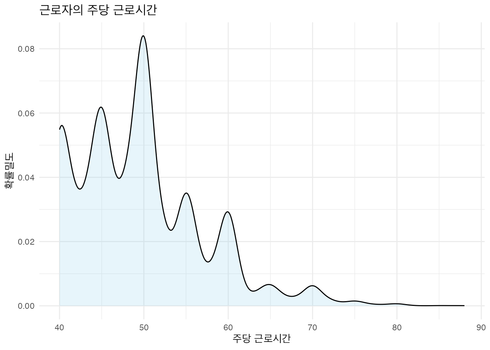
히스토그램의 y축은 기본적으로 각 구간의 빈도를 나타낸다. 빈도 대신 확률밀도를 표현하려면aes(y = after_stat(density))를 사용한다. 확률밀도의 높이는 단순한 사례 비율과 같지 않으며, 각 막대의 높이 × 너비를 모두 더한 면적이 1이 되도록 조정된 값이다. 이 변환은 뒤에서 밀도곡선을 히스토그램에 겹칠 때 유용하다.
worker_3_se %>%
filter(w336_02 >= 0, w336_01 >= 0) %>%
mutate(whour = w336_01 + w336_02) %>%
ggplot() +
geom_histogram(
aes(x = whour, y = after_stat(density)),
binwidth = 1, color = "black", fill = "skyblue", alpha = 0.2
) +
labs(
title = "근로자의 주당 근로시간",
x = "주당 근로시간", y = "확률밀도"
) +
theme_minimal()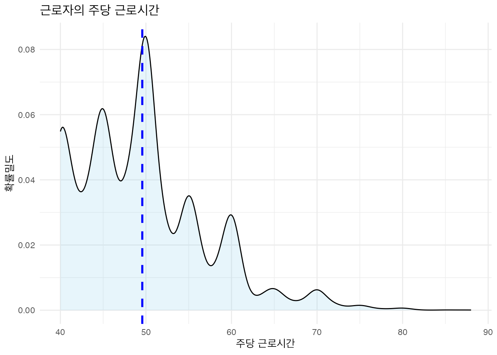
4.3.1.2 density curve
연속형 변수 하나의 분포는 밀도곡선(density curve)으로도 표현할 수 있다. 밀도곡선은 관측된 자료의 분포를 부드럽게 추정한 곡선이다. 특정 x값에서의 곡선 높이는 확률 그 자체가 아니라 확률밀도이며, 어떤 구간의 확률은 그 구간 아래의 면적으로 해석한다.
- 밀도곡선의 y축은 확률밀도이다.
- 곡선 아래 전체 면적은 1이다.
- 왼쪽 꼬리가 길면 왼쪽으로 치우친 분포(left-skewed distribution), 오른쪽 꼬리가 길면 오른쪽으로 치우친 분포(right-skewed distribution)라고 한다.
- 왼쪽으로 치우친 분포에서는 평균이 중앙값보다 작은 경우가 많고, 오른쪽으로 치우친 분포에서는 평균이 중앙값보다 큰 경우가 많다. 다만 이는 일반적인 경향이므로 평균과 중앙값을 직접 확인해야 한다.
- 대칭 분포에서도 평균과 중앙값이 반드시 같다고 단정할 수는 없으며, 표본에서는 차이가 생길 수 있다.
worker_3_se %>%
filter(w336_02 >= 0, w336_01 >= 0) %>%
mutate(whour = w336_01 + w336_02) %>%
ggplot() +
geom_density(aes(x = whour), color = "black", fill = "skyblue", alpha = 0.2) +
labs(
title = "근로자의 주당 근로시간",
x = "주당 근로시간", y = "확률밀도"
) +
theme_minimal()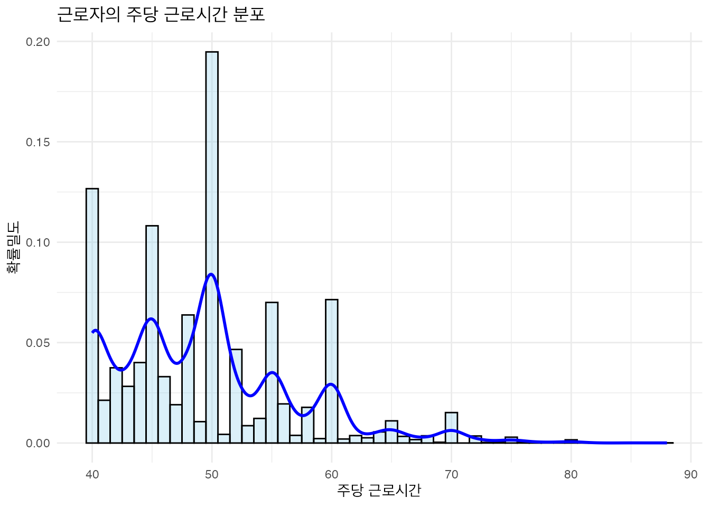
총근로시간은 40~54시간 구간에 집중되어 있고, 그보다 긴 근로시간 쪽으로 꼬리가 이어진다. 평균은 약 49.57시간, 중앙값은 50시간이다. 분포의 방향은 그래프의 꼬리와 요약통계량을 함께 보고 판단해야 한다. 다음 코드에서는 평균 위치를 geom_vline()으로 표시한다.
worker_3_se %>%
filter(w336_02 >= 0, w336_01 >= 0) %>%
mutate(whour = w336_01 + w336_02) %>%
ggplot() +
geom_density(aes(x = whour), color = "black", fill = "skyblue", alpha = 0.2) +
geom_vline(
aes(xintercept = mean(whour)),
color = "blue", linetype = "dashed", linewidth = 1
) +
labs(
title = "근로자의 주당 근로시간",
x = "주당 근로시간", y = "확률밀도"
) +
theme_minimal()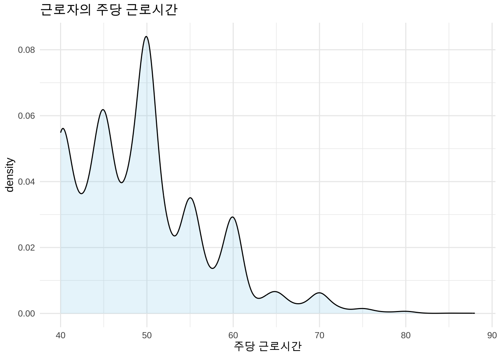
4.3.1.3 histogram + density curve
ggplot2에서는 여러 층을 쌓아 히스토그램과 밀도곡선을 함께 표현할 수 있다. 두 그래프를 겹치려면 x축뿐 아니라 y축의 단위도 같아야 한다. 히스토그램의 기본 y축은 빈도이므로 after_stat(density)를 사용해 밀도곡선과 같은 확률밀도 단위로 바꾼다.
worker_3_se %>%
filter(w336_02 >= 0, w336_01 >= 0) %>%
mutate(whour = w336_01 + w336_02) %>%
ggplot() +
geom_histogram(
aes(x = whour, y = after_stat(density)),
binwidth = 1, color = "black", fill = "skyblue", alpha = 0.3
) +
geom_density(aes(x = whour), color = "blue", linewidth = 1) +
labs(
title = "근로자의 주당 근로시간 분포",
x = "주당 근로시간", y = "확률밀도"
) +
theme_minimal()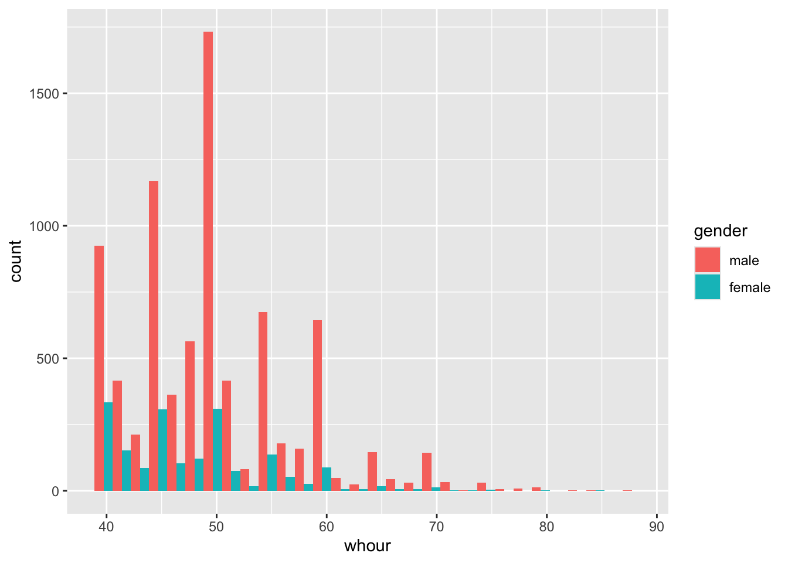
4.3.1.4 집단별 그래프 비교
전체 분포를 확인한 다음에는 집단별 분포가 어떻게 다른지 살펴볼 수 있다. 예를 들어 성별에 따라 총근로시간의 중심, 퍼짐, 꼬리 모양이 다른지 탐색해보자. 평균만 비교하면 분포의 겹침이나 이상치를 놓칠 수 있으므로 그래프와 요약통계량을 함께 확인하는 것이 좋다.
ggplot2에서는 집단에 따라 색이나 선 종류를 다르게 지정할 수 있다. 먼저 성별과 같은 집단변수를 범주형 변수인 factor로 변환한다. tidyverse에 포함된 forcats는 factor의 수준(level)을 변경하거나 순서를 조정할 때 유용하다.
먼저 worker_3_se의 성별 변수 w3_sex를 확인한다. str()로 저장 형태를 확인하고 count()로 값별 빈도를 계산한다. 숫자로 저장된 변수라도 숫자의 크기보다 집단 구분이 중요한 경우에는 factor로 변환해야 한다.
str(worker_3_se$w3_sex)
## int [1:10019] 1 1 1 2 1 1 2 1 1 1 ...
worker_3_se %>%
count(w3_sex)
## w3_sex n
## 1 -9 10
## 2 1 8124
## 3 2 1885결과를 살펴보면 w3_sex는 정수형이며 1과 2 외에 -9가 10건 포함되어 있다. 코드북에서 -9가 성별 불상을 뜻한다는 것을 확인한 뒤 다음 세 단계를 수행한다.
filter()로 유효하지 않은 성별 코드를 제외한다.mutate()와as_factor()로w3_sex를 factor형 변수gender로 변환한다.fct_recode()로 1과 2라는 수준에 이해하기 쉬운 이름을 부여한다.
worker_3_se %>%
filter(w336_02 >= 0, w336_01 >= 0, w3_sex > 0) %>%
mutate(
whour = w336_01 + w336_02,
gender = as_factor(w3_sex),
gender = fct_recode(gender, "남성" = "1", "여성" = "2")
) -> worker_3_fa
str(worker_3_fa$gender)
## Factor w/ 2 levels "남성","여성": 1 1 1 2 1 1 2 1 1 1 ...성별 변수를 factor로 변환했으니 성별에 따른 총근로시간 분포를 비교해보자. 집단을 구분하는 대표적인 방법은 다음 두 가지이다.
한 패널에서 색이나 선 종류로 집단을 구분하는 방법:
aes(fill = gender)처럼 지정한다.집단별 그래프를 서로 다른 패널에 그리는 방법:
facet_wrap(~gender)처럼 지정한다.
먼저 한 패널에서 성별을 면 색으로 구분한다. fill을 aes() 안에서 변수에 연결하면 자동으로 범례가 생성된다. 두 집단의 사례수가 다르면 빈도만으로 분포를 비교하기 어려우므로 첫 그래프에서는 원자료의 빈도를 확인하고, 다음 그래프에서는 집단별 확률밀도를 비교한다.
worker_3_fa %>%
ggplot() +
geom_histogram(aes(x = whour, fill = gender), binwidth = 1) +
labs(x = "주당 근로시간", y = "빈도(명)", fill = "성별")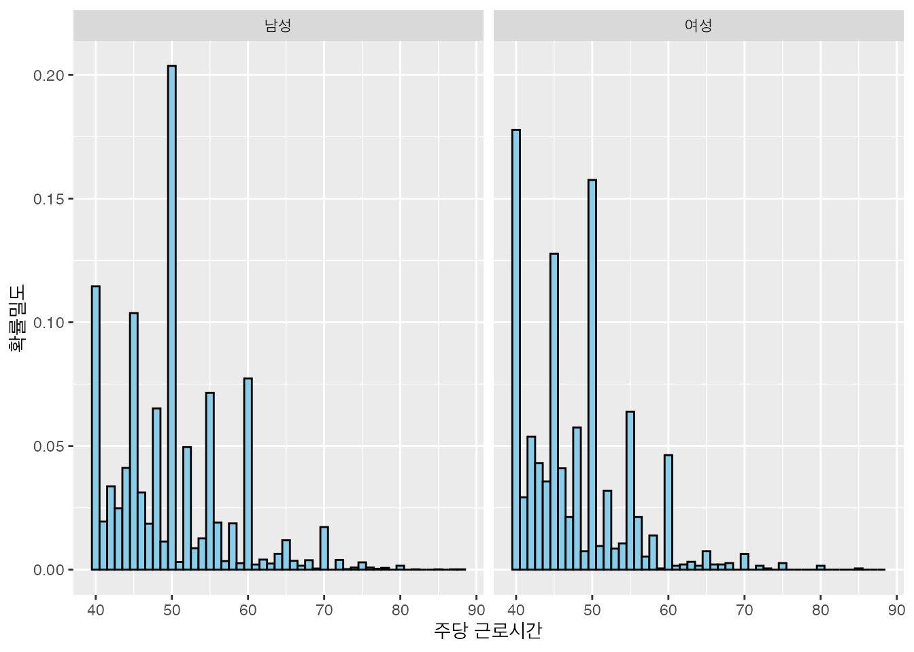
이 자료에는 남성이 여성보다 많으므로 빈도 히스토그램에서는 남성 막대가 전반적으로 크게 나타난다. 집단의 크기가 다른 상황에서 분포의 모양을 비교하려면 y축을 집단별 확률밀도로 바꾸고 막대를 반투명하게 겹쳐 그릴 수 있다.
worker_3_fa %>%
ggplot() +
geom_histogram(
aes(x = whour, y = after_stat(density), fill = gender),
position = "identity", binwidth = 1, alpha = 0.4
) +
labs(x = "주당 근로시간", y = "확률밀도", fill = "성별")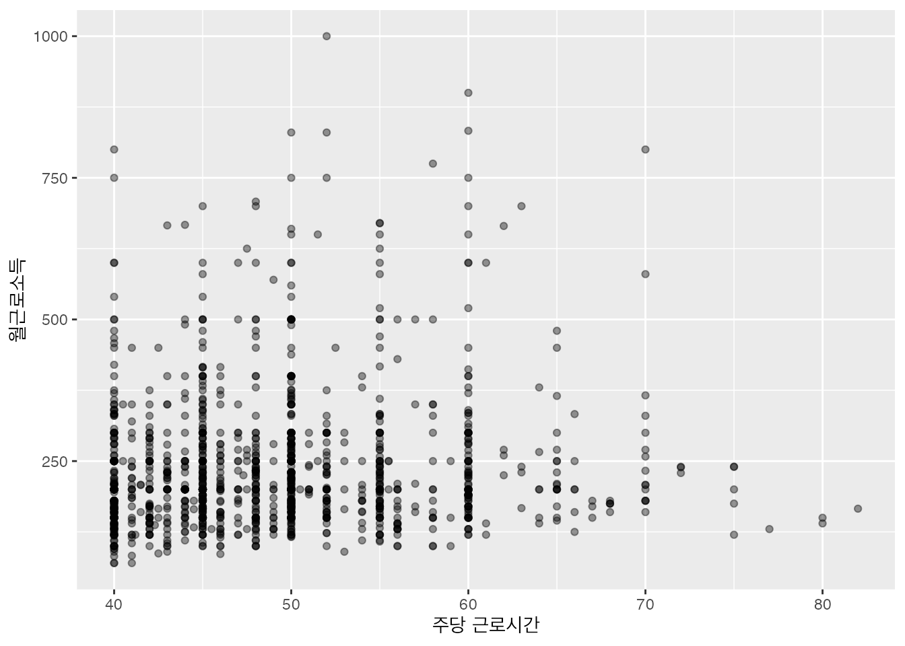
두 번째 방법은 집단별 그래프를 서로 다른 패널에 그리는 것이다. facet_wrap()은 지정한 factor의 수준마다 패널을 만든다. 패널의 y축을 확률밀도로 맞추면 사례수가 다른 집단의 분포 모양을 비교하기 쉽다.
worker_3_fa %>%
ggplot() +
geom_histogram(
aes(x = whour, y = after_stat(density)),
binwidth = 1, fill = "skyblue", color = "black"
) +
labs(x = "주당 근로시간", y = "확률밀도") +
facet_wrap(~gender)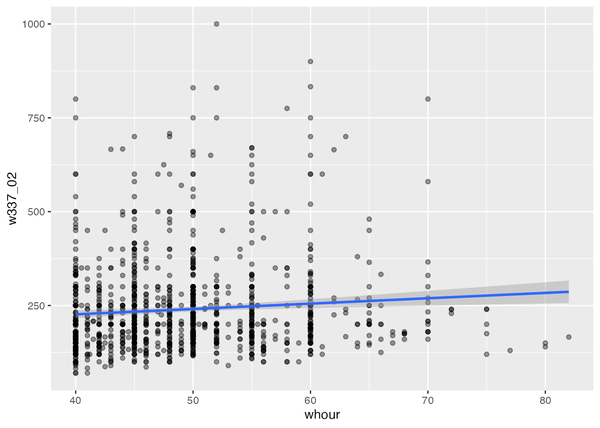
4.4 변인이 2개인 graph
4.4.1 Continuous X, Continuous Y
4.4.1.1 산점도 geom_point
두 연속형 변수의 관계를 탐색할 때는 산점도(scatter plot)를 사용한다. 각 관측치를 x값과 y값이 만나는 지점에 점으로 표시하므로 관계의 방향, 형태, 강도와 이상치를 함께 살펴볼 수 있다. ggplot2에서는 geom_point()를 사용하고 aes(x = ..., y = ...)로 두 변수를 지정한다.
다음 코드는 총근로시간(whour)과 월근로소득(w337_02)의 산점도를 그린다.2 이 자료에서는 총근로시간이 길수록 월근로소득이 증가하는 약한 양의 관계가 보이지만, 점들이 넓게 퍼져 있어 근로시간만으로 소득을 설명하기는 어렵다.
worker_3_fa %>%
filter(w337_02 > 0) %>%
ggplot(aes(x = whour, y = w337_02)) +
geom_point(alpha = 0.4) +
labs(x = "주당 근로시간", y = "월근로소득")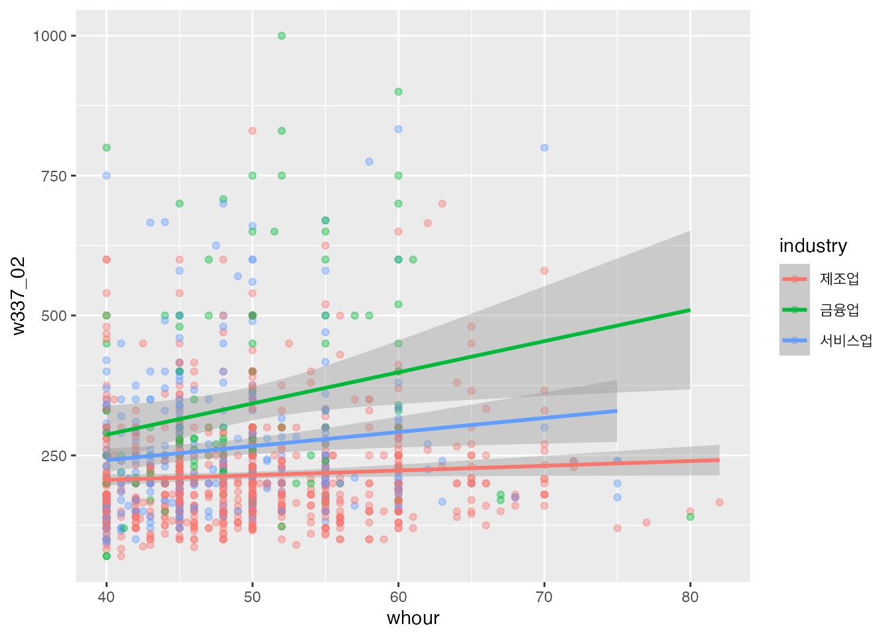
4.4.1.2 추세선 geom_smooth
geom_smooth()를 추가하면 두 변수의 전반적인 관계를 추세선으로 표현할 수 있다. 여기서는 선형모형(linear model)을 뜻하는 method = "lm"을 사용한다.3 여러 geom이 같은 변수를 사용한다면 aes()를 ggplot() 안에 지정해 중복을 줄일 수 있다.
worker_3_fa %>%
filter(w337_02 > 0) %>%
ggplot(aes(x = whour, y = w337_02)) +
geom_point(alpha = 0.4) +
geom_smooth(method = "lm", formula = y ~ x)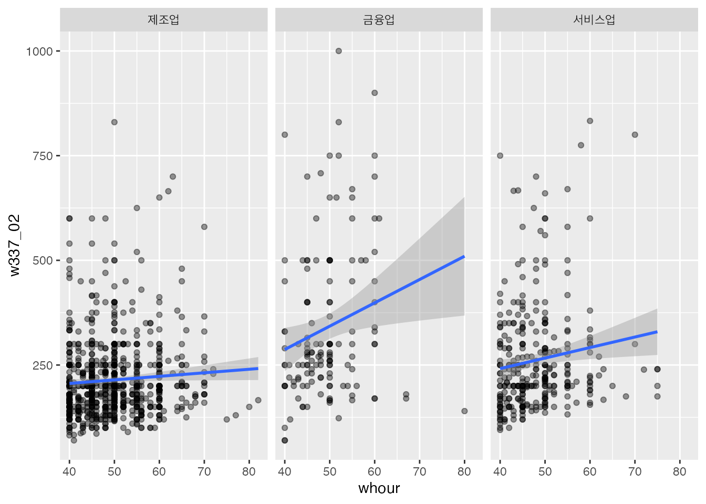
그래프에는 관측치를 나타내는 점, 추정된 회귀선, 회귀선 주위의 회색 띠가 함께 나타난다. 회색 띠는 기본적으로 각 x값에서 추정한 평균 반응의 95% 신뢰구간이다. 개별 관측값이 위치할 범위를 뜻하는 예측구간과는 다르다. geom_smooth()의 주요 옵션은 다음과 같다.
method: 추세선을 추정할 방법이다.lm,glm,gam,loess등을 사용할 수 있다.se: 신뢰구간의 표시 여부이다. 기본값은TRUE이며se = FALSE로 숨길 수 있다.level: 신뢰수준이다. 기본값은 0.95이며, 예를 들어level = 0.99로 변경할 수 있다.na.rm: 결측치 처리 방식을 지정한다.TRUE이면 결측치를 제거하면서 관련 경고를 표시하지 않는다.
히스토그램과 마찬가지로 산점도와 추세선도 집단별로 구분할 수 있다. 한 그래프에서 색으로 집단을 표현하는 방법(colour = group)과 패널을 분리하는 방법(facet_wrap(~group))을 살펴보자.
근로시간과 소득의 관계가 산업(w3_ind1)과 직종·직위(w3_posit)에 따라 다른지 탐색해보자. 두 변수를 factor로 변환하고 코드값에 해석 가능한 이름을 붙인 뒤 worker3_final에 저장한다.
worker_3_fa %>%
mutate(
industry = as_factor(w3_ind1),
industry = fct_recode(
industry, "제조업" = "1", "금융업" = "2", "서비스업" = "3"
),
position = as_factor(w3_posit),
position = fct_recode(
position,
"사무관리직" = "1", "생산관리직" = "2",
"사무직" = "3", "생산직" = "4"
)
) -> worker3_final
worker3_final %>%
filter(w337_02 > 0) %>%
ggplot(aes(x = whour, y = w337_02, colour = industry)) +
geom_point(alpha = 0.4) +
geom_smooth(method = "lm", formula = y ~ x)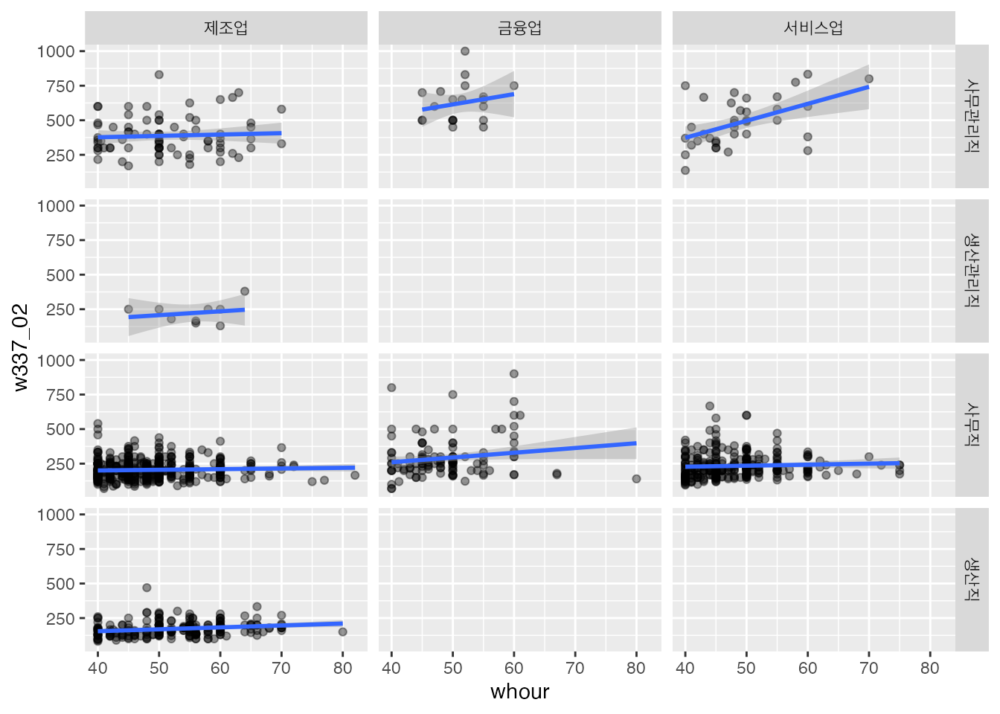
worker3_final %>%
filter(w337_02 > 0) %>%
ggplot(aes(x = whour, y = w337_02, colour = position)) +
geom_point(alpha = 0.4) +
geom_smooth(method = "lm", formula = y ~ x)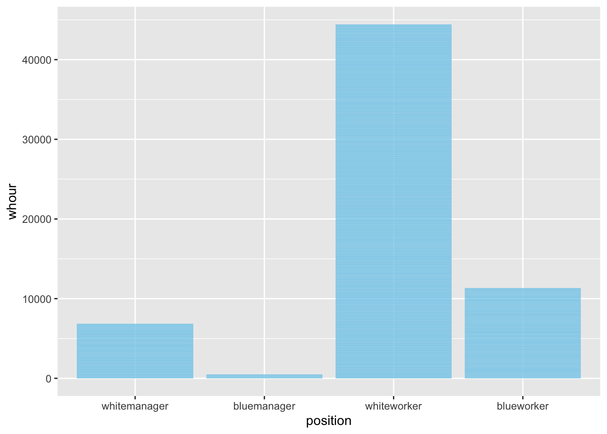
그래프에서는 금융업 집단의 월근로소득 수준이 상대적으로 높고, 산업 및 직종·직위에 따라 점의 분포와 추세선이 달라지는 모습을 확인할 수 있다. 다만 일부 집단은 사례수가 적고 집단 내 산포도 크므로, 그래프만으로 모집단의 차이나 인과관계를 단정해서는 안 된다. 여기서 발견한 패턴은 이후 장에서 적절한 통계모형으로 검토해야 한다.집단별 그래프를 여러 패널로 나누어보자. facet_wrap(~group)을 추가하면 각 수준이 별도의 패널에 나타난다. 모든 패널이 같은 축 범위를 사용하므로 집단 간 기울기와 분포를 직접 비교할 수 있다.
worker3_final %>%
filter(w337_02 > 0) %>%
ggplot(aes(x = whour, y = w337_02)) +
geom_point(alpha = 0.4) +
geom_smooth(method = "lm", formula = y ~ x) +
facet_wrap(~industry)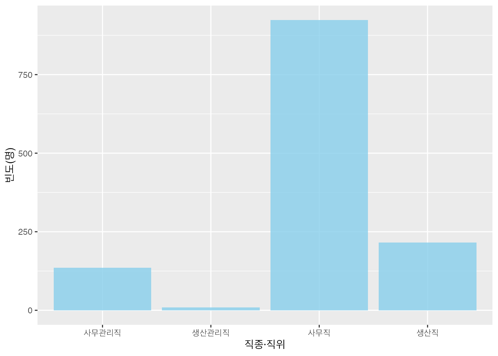
worker3_final %>%
filter(w337_02 > 0) %>%
ggplot(aes(x = whour, y = w337_02)) +
geom_point(alpha = 0.4) +
geom_smooth(method = "lm", formula = y ~ x) +
facet_wrap(~position)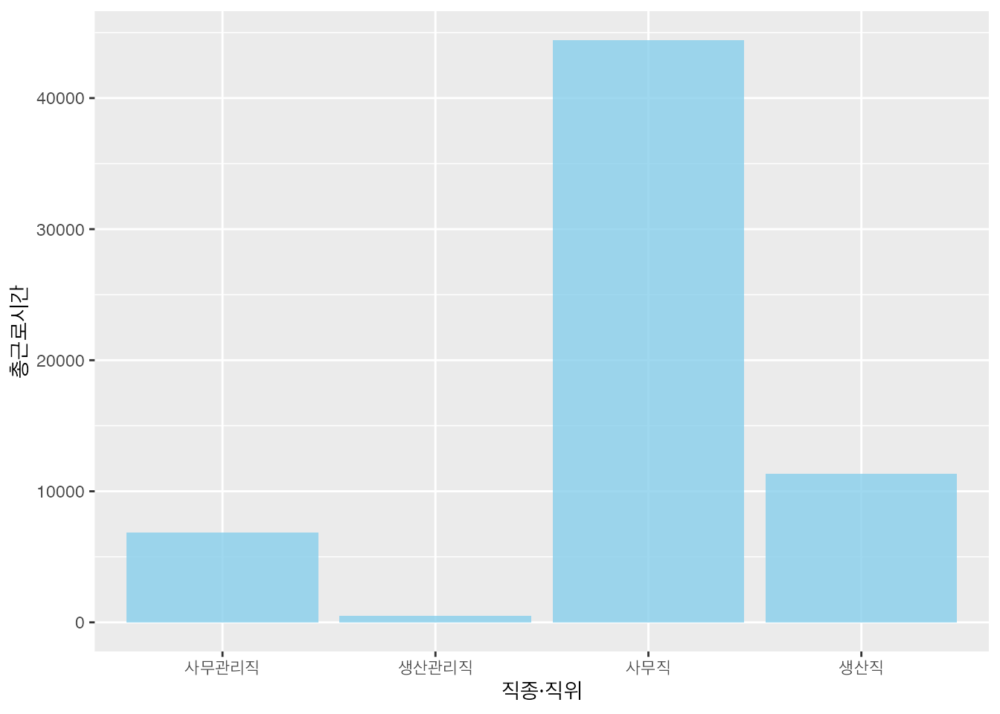
두 범주형 변수의 조합으로 패널을 나누려면 facet_grid()를 사용한다. facet_grid(행 변수 ~ 열 변수)의 순서로 지정한다.
worker3_final %>%
filter(w337_02 > 0) %>%
ggplot(aes(x = whour, y = w337_02)) +
geom_point(alpha = 0.4) +
geom_smooth(method = "lm", formula = y ~ x) +
facet_grid(position ~ industry)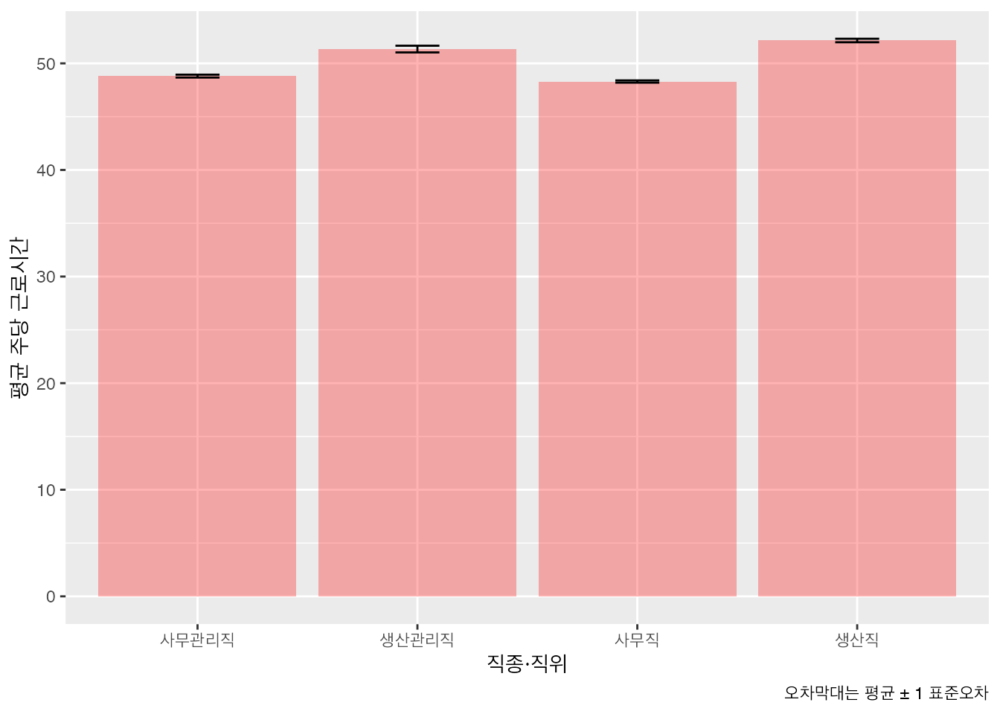
4.4.2 Discrete X, Continuous Y
두 변수를 그래프에 표현할 때 x축이 범주형이고 y축이 연속형인 경우가 있다. 예를 들어 성별에 따른 소득의 분포나 산업에 따른 근로시간의 분포를 비교할 수 있다. 이때 막대그래프는 요약값을, 박스플롯은 분포를 보여주는 데 적합하다.
4.4.2.1 bar chart
geom_bar()는 x축 범주별 관측치 수를 세어 막대 높이로 나타낸다. 예를 들어 성별이 1인 관측치가 70건, 2인 관측치가 30건이면 두 막대의 높이는 각각 70과 30이 된다. 따라서 geom_bar()의 기본 통계적 변환은 stat = "count"이며 y축 변수를 따로 지정하지 않는다.
이미 요약된 y값을 막대 높이로 사용하려면 geom_col()을 사용한다. geom_col()은 geom_bar(stat = "identity")와 같은 역할을 한다. 원자료의 여러 y값을 그대로 넣으면 같은 범주의 값들이 누적되므로, 평균이나 합계처럼 목적에 맞는 요약값을 먼저 계산해야 한다.
# x변수만 지정: 범주별 사례 수
worker3_final %>%
filter(w337_02 > 0) %>%
ggplot(aes(x = position)) +
geom_bar(fill = "skyblue", alpha = 0.8) +
labs(x = "직종·직위", y = "빈도(명)")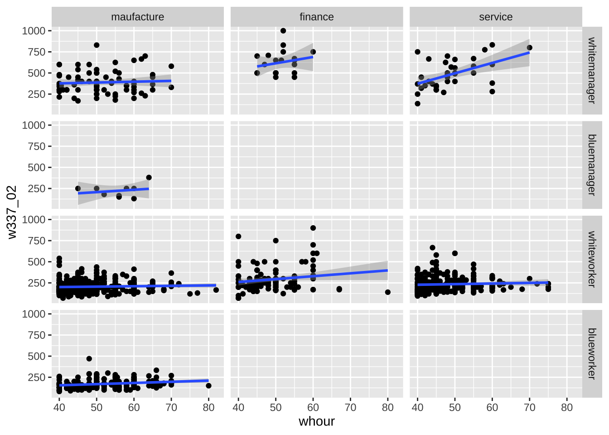
# 범주별 총근로시간을 먼저 계산
worker3_final %>%
filter(w337_02 > 0) %>%
group_by(position) %>%
summarise(total_whour = sum(whour), .groups = "drop") -> position_total
position_total %>%
ggplot(aes(x = position, y = total_whour)) +
geom_col(fill = "skyblue", alpha = 0.8) +
labs(x = "직종·직위", y = "총근로시간")
총근로시간의 합은 집단의 사례수가 많을수록 커지므로 집단의 전형적인 근로시간을 비교하는 데는 적합하지 않을 수 있다. 집단별 평균을 비교하려면 다음 절처럼 평균을 계산해 표현해야 한다.
4.4.2.2 stat_과 geom_의 관계
앞의 그래프는 직종·직위별 총근로시간을 보여주지만, 이 값은 집단의 규모에 크게 좌우된다. 직종·직위별로 한 사람의 전형적인 근로시간을 비교하려면 평균과 불확실성을 함께 표현하는 편이 더 적절하다.
동전의 앞면, stat_과 geom_
여기서 geom과 stat의 의미와 관계를 살펴보자.
geom: 관측값이나 요약값을 어떤 모양으로 표현할지 지정한다. 예를 들어geom_bar()는 막대,geom_line()은 선을 그린다.stat: 원자료를 그래프에 표시하기 전에 어떤 방식으로 변환할지 지정한다. 예를 들어stat_count()는 범주별 사례 수를 계산하고stat_summary()는 평균과 같은 요약통계량을 계산한다.
각 geom에는 기본 stat이 연결되어 있으며, 반대로 stat에도 기본 geom이 연결되어 있다. 따라서 다음 두 표현은 같은 결과를 만든다. 이 책에서는 표현하려는 그래프의 모양을 먼저 생각할 수 있도록 geom 중심의 표현을 주로 사용한다.
geom_bar(stat = "count")stat_count(geom = "bar")
직종·직위별 평균 근로시간을 표현하려면 stat_summary() 또는 stat = "summary"를 사용한다. stat_summary()는 각 집단의 여러 관측값을 평균과 같은 요약값으로 변환한다. 함께 사용하는 fun과 fun.data의 차이는 다음과 같다.
fun: 평균이나 중앙값처럼 하나의 수를 반환하는 함수를 지정한다. 예:fun = mean,fun = median.fun.data: 중심값과 하한·상한처럼 여러 값을 데이터프레임으로 반환하는 함수를 지정한다. 예:fun.data = mean_se.
다음 코드는 직종·직위별 평균 근로시간을 막대로 나타내고 평균의 위아래에 1 표준오차를 오차막대로 표시한다. mean_se()는 ggplot2가 제공하므로 별도의 패키지가 필요하지 않다. 오차막대가 표준편차, 표준오차, 신뢰구간 가운데 무엇을 나타내는지 그래프나 본문에 반드시 밝혀야 한다.
worker3_final %>%
ggplot(aes(x = position, y = whour)) +
geom_bar(
stat = "summary",
fun = mean,
fill = "red",
alpha = 0.3
) +
geom_errorbar(
stat = "summary",
fun.data = mean_se,
colour = "black",
width = 0.2
) +
labs(
x = "직종·직위", y = "평균 주당 근로시간",
caption = "오차막대는 평균 ± 1 표준오차"
)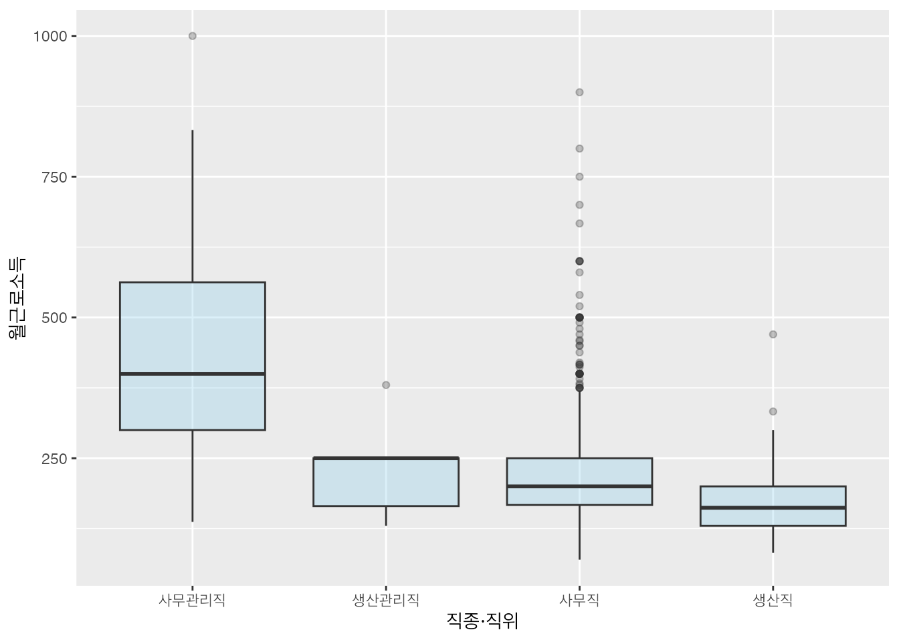
4.4.2.3 boxplot
박스플롯(boxplot), 또는 상자수염그림(box-and-whisker plot)은 자료의 중앙값과 분포를 함께 확인할 수 있는 그래프이다. 상자, 중앙선, 수염, 수염 밖의 점을 통해 다음 정보를 표현한다.
중앙값(median): 상자 안의 선으로 표시하며 제2사분위수(Q2)와 같다. 평균과는 다른 통계량이다.제1사분위수(Q1)와제3사분위수(Q3): 상자의 아래쪽과 위쪽 경계이다. 상자는 가운데 50%의 관측값을 포함한다.사분위범위(IQR):Q3 - Q1이며 자료의 중간 50%가 퍼진 정도를 나타낸다.수염(whisker): 아래쪽은Q1 - 1.5 × IQR이상인 관측값 가운데 가장 작은 값까지, 위쪽은Q3 + 1.5 × IQR이하인 관측값 가운데 가장 큰 값까지 이어진다. 따라서 항상 실제 최솟값과 최댓값을 나타내는 것은 아니다.수염 밖의 점: 잠재적 이상치로 표시한다. 자료 입력 오류라고 단정할 수 없으므로 원자료와 연구 맥락을 추가로 확인해야 한다.
ggplot2에서 박스플롯을 그리려면 geom_boxplot()을 사용한다.
worker3_final %>%
filter(w337_02 > 0) %>%
ggplot(aes(x = position, y = w337_02)) +
geom_boxplot(
fill = "skyblue",
alpha = 0.3
) +
labs(x = "직종·직위", y = "월근로소득")
4.5 Miscellaneous items
완성된 그래프는 ggsave()로 저장할 수 있다. 마지막으로 출력한 그래프를 저장할 수도 있지만, 그래프를 객체에 담아 plot 인수로 명시하면 어떤 그림을 저장하는지 분명해진다. 파일 확장자에 따라 PNG, PDF 등의 형식이 결정된다.
income_boxplot <- worker3_final %>%
filter(w337_02 > 0) %>%
ggplot(aes(x = position, y = w337_02)) +
geom_boxplot(fill = "skyblue", alpha = 0.3) +
labs(x = "직종·직위", y = "월근로소득")
ggsave(
filename = "images/income_boxplot.png",
plot = income_boxplot,
width = 8, height = 5, units = "in", dpi = 300
)그래프를 해석할 때는 축의 단위, 분석에 포함된 관측치, 결측치 처리, 집단별 사례수, 오차막대의 의미를 함께 확인해야 한다. 보기 좋은 그래프보다 자료의 구조와 불확실성을 정직하게 보여주는 그래프가 더 좋은 그래프이다.
filter()를 생략하면 결측을 의미하는 음수 코드가 그래프에 포함된다. 분석 전에 코드북을 확인하고 유효한 관측치의 범위를 정해야 한다.↩︎geom_smooth()의 자세한 옵션은 https://ggplot2.tidyverse.org/reference/geom_smooth.html을 참고한다.↩︎